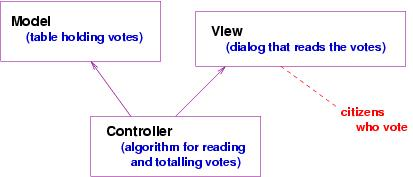
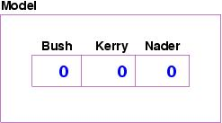
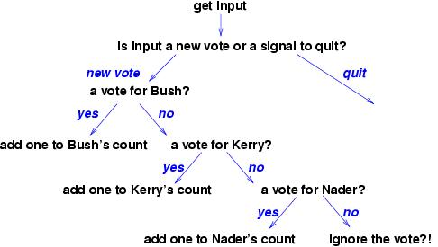
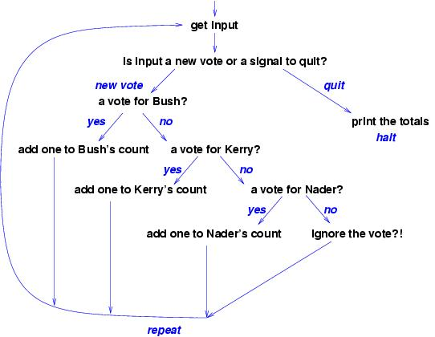
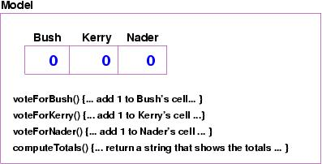
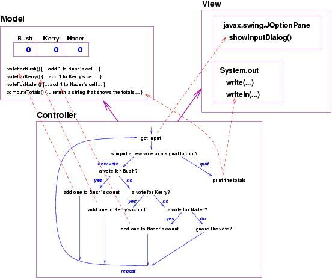

The Java language is a bit confusing, because there are two notions for ``component'' --- class and object. Here is a simplistic explanation:
java LibraryManagerthis constructs a LibraryManager object from class LibraryManager. Within LibraryManager, there might be statements of the form,
... new LibraryBook(...) ...The new statement constructs in storage a LibraryBook object from class LibraryBook. In this way, multiple objects are constructed and live in primary storage.
To summarize: classes are the components that the programmer writes and saves on disk; objects are the components that live in primary storage when the program executes. If we wish to be pedantic, we say that the component diagrams in the previous lecture are object diagrams.
You are the Diebold Company, and the state of Ohio has asked you to write the software for their electronic voting machines for the 2004 US presidential election.
The set of use-cases is almost always incomplete, and the program designer might propose more of them, e.g., ``What happens if the voter types kerry or kery instead of Kerry''? Rarely does a programmer begin with ``all'' the use-cases, but there should be enough of them to gain a good understanding of the problem.
The first and most important task is to decide the data structure that resides in the model.
The programmer might ask: ``Are these all the candidates?'' ``Does Ohio allow write-in ballots?'' The answers to these questions affect the data structure. For now, we work with the 3-celled array.
1. read and total the votes 2. print the totalsWe also know that Step 1 must be conducted one vote at a time, so the details for Step 1 go something like this:
1a. read a vote (if there is one to read! if not, quit Step 1) 1b. if the vote is for Bush (or Kerry or Nader), add one to the appropriate count 1c. repeat Steps 1a and 1b until no more votes to readThe outline should list all the actions the program must do, even if we do not state the details precisely. Now we are ready to draw the algorithm as a flow chart, which is a graph that shows the details and ordering. Here is the flow chart for Steps 1a and 1b:
Now, we finish the flow chart by including Steps 1c and 2. This adds a loop --- a backwards arc --- to the flowchart and gives us the following:
When we take a close look at the algorithm, we notice that the phrase, ``get input,'' which suggests that we should use a method in the view component to read the vote. Next, the phrase, ''add one to Bush's count,'' suggests we should make a method in the model component to add a vote for Bush (similarly for Kerry and for Nader). Finally, the phrase, ``print the totals'', suggests there should be a method that gets the totals (and a method in the output view to print them).
This suggests we modify the model with some extra methods:

The red dashed arrows are added to remind us which steps in the controller's algorithm will invoke the methods in the model and the view. The purple solid arrows are traditional; they summarize the red dashed arrows by telling us which components depend on the other components to execute. (Here, the controller cannot execute without its model and view, but the model can be extracted and used without the controller and view, say, in another application.)
Now it is time to write the codings of the methods and the coding of the algorithm.
It is best to code the model first, because any flaws in the program's data structures will render the program useless. Based on our design, here is a coding of the model:
package Election2004;
/** VoteTable remembers the votes for the 2004 US Presidential Election */
public class VoteTable
{
private int[] vote; // holds the votes for the candidates
// vote[0] holds Bush's votes
// vote[1] holds Kerry's votes
// vote[2] holds Nader's votes
/** Constructor VoteTable initializes the table */
public VoteTable()
{ vote = new int[3]; } // all cells are automatically set to 0
/** voteForBush adds one more vote to Bush's total */
public void voteForBush()
{ vote[0] = vote[0] + 1; }
/** voteForKerry adds one more vote to Kerry's total */
public void voteForKerry()
{ vote[1] = vote[1] + 1; }
/** voteForNader adds one more vote to Nader's total */
public void voteForNader()
{ vote[2] = vote[2] + 1; }
/** computeTotals reports the votes for the three candidates
* @return a string that lists the candidates and their votes. */
public String computeTotals()
{ return "Bush = " + vote[0] + "\n"
+ "Kerry = " + vote[1] + "\n"
+ "Nader= " + vote[2] + "\n" ; }
}
This component should be tested by itself (called unit testing)
as thoroughly as possible. You can use a Development Environment
(e.g., BlueJ or Eclipse) to do this, or you can write a tester
program, sometimes called a test harness, to do this.
Here is a sample test harness:
package Election2004;
public class TestModel
{ public static void main(String[] a)
{ VoteTable t = new VoteTable();
System.out.println(t.computeTotals()); // all candidates should have 0s
t.voteForNader();
System.out.println(t.computeTotals()); // Nader should have 1
t.voteForKerry();
System.out.println(t.computeTotals()); // Nader and Kerry should have 1
// etc.
}
}
A test harness should test all the methods of the component, invoked
in all
possible orderings.
Next, here is the controller, named Start:
package Election2004;
import javax.swing.*;
/** Start starts and controls the vote counting. */
public class Start
{ public static void main(String[] a)
{
VoteTable table = new VoteTable(); // construct model object
// tabulate the votes:
boolean processing = true;
while ( processing )
{ String s = JOptionPane.showInputDialog(
"Please type the last name of your candidate:");
if ( s == null ) // did election official press Cancel ?
{ processing = false; } // yes, time to quit
else { if ( s.equals("Bush") )
{ table.voteForBush(); }
else if ( s.equals("Kerry") )
{ table.voteForKerry(); }
else if ( s.equals("Nader") )
{ table.voteForNader(); }
else { } // it's an invalid vote and is lost forever...
}
}
// total the votes:
System.out.println( table.computeTotals() );
System.exit(0); // terminate program (including graphics components)
}
}
It is a bit difficult to do unit testing on a controller,
since it controls the other parts of the program, but it is
possible to write a dummy version of VoteTable for testing
the controller.
The dummy version, called a stub (sorry --- it's a bad name),
might look like this:
package Election2004;
/** This is a dummy VoteTable, for testing purposes only. */
public class VoteTable
{ public VoteTable() { }
public void voteForBush() { System.out.println("B"); }
public void voteForKerry() { System.out.println("K"); }
public void voteForNader() { System.out.println("N"); }
public String computeTotals()
{ return "request to compute totals" }
}
There is no intelligence in the dummy version; it is built to let
us see the order in which the controller uses the methods in the model.
Finally, note that we have used the prebuilt objects, javax.swing.JOptionPane (for dialog input) and System.out (for output to the command window), so there is no additional programming needed for the view components.
Now, the application is ready for systems testing and ultimately, to let the voters of Ohio decide the 2004 US presidential election.
Perhaps you notice that the two components in the case study were prefixed by the line,
package Election2004;This tells the Java compiler that the two classes ``belong together'', and indeed, they must be placed in the same disk folder (directory), named Election2004. Such a folder is called a Java package.
Java makes it easy to create and execute a package.
(Note: If you use the BlueJ IDE, you should read the CIS300 web pages, Constructing packages within BlueJ and How to use BlueJ to start a main method to learn how BlueJ lets you build and execute packages. The notes there might be a bit out of date, but if you are having problems making packages with BlueJ, the notes might be useful.)
The following instructions work with the Java Development Kit and a command window: Say that we want to group the above two classes into a package named Election2004:
package Election2004;
javac Election2004\VoteTable.java(or, if that doesn't work, use)
javac -classpath . Election2004\VoteTable.java(The -classpath . tells the Java compiler that the other classes in the package are found where VoteTable.java lives. ) Note the folder name prefixed to the class name.
java Election2004.StartNote that the folder name is prefixed with a dot to the start-up class name.
We can generate an interlinked collection of web pages for the package with just one javadoc command:
javadoc Election2004
You can see the Election2004 package at http://www.cis.ksu.edu/~schmidt/300s05/Lectures/VoteExample .
As an exercise, you should copy the two classes to your computer, make a package, compile it, execute it, and use javadoc to generate its API specification.
There are several advantages to grouping programs into packages:
import javax.swing.*;at the beginning of the classes we wrote, we were connecting to and using a package, namely javax.swing, that someone else wrote.
Indeed, the general pattern for using an already written package, P, in an application is to
import P.*;